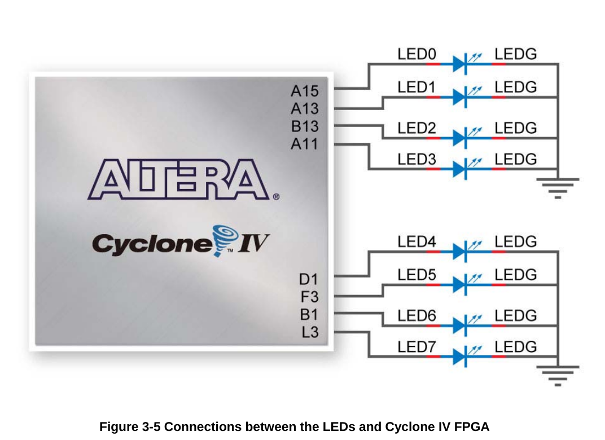

So, you decided you want to learn fpga programming and have done the prerequisite from the last blog post. Today we want to show you how to figure out Quartus by doing a hardware equivalent of the hello-World program used in the software world - we call it AndGate because it is simply that - an and gate feed by to push-buttons as input and a status-LED as output. This way we will make use of the Block Diagram Files (bdf) from Quartus.
So we simply start by opening Quartus via the desktop-icon. Then we go to menu File >> New Project wizard as shown below, and click it.
I have stolen this tutorial from here but given it my own images and style.
Setup the project
Next we see an introduction window as shown below. We click next to get to the next window where we name the Project.

Give it a proper AndGate or HelloWorld, as you like…
Next on the page 'Project Type' we select 'Empty Project'
We skip the next page 'Add files' and go to 'Family, Device and Board Settings'.
Here we select the Family Cyclone IV E and select the device with the name 'EP4CE22F17C6' according to the accompanied data sheet of the DE0-nano board. We click next and for now skip the step 'EDA Tool Settings'. Finally, we get to the Summary of the project wizard.

After you confirmed all is as it should be, click on 'Finish' to end the project wizard.
Building the logic
As described above we will use the staple features of Quartus to build our own logic in a graphical way without any HDL (Hardware Description) like VHDL or Verilog.
A tab AndGate.bdf appears with a blank canvas where we can 'draw' our circuit /logic gates. If we want, we can save our current state by going to File >> save as … and give a name andGate.bdf and a suitable path.
Now click on the symbol tool icon as shown in the image below, to open the symbol library.

A new window opens, showing the library with the three main folders 'Megafunction','other' and primitives…
We are looking for and gate with two inputs, so go to 'Primitives', 'logic', 'and2', confirm with 'ok'…
Now click in the middle of the grid canvas to enter the symbol, then click esc to exit the library modus.
Adding pins
Next we will add some pins to the design file. Those pins define the interface between our design and the physical I/O pins. Later in the pin assignment we will link the pins to the physical pins of the device.
The pin tool icon is right next to the symbol tool icon. Click on the arrow to open the selection menu.

Select output and drop the icon down somewhere next to the output of the and gate. Then draw a wire between the gate output and the pin by starting from either point, holding down the mouse and drawing a wire to the other point. Then we have a connection.
Now, lets do the same thing equivalent for the input pins…
Lastly we will rename the pins to a more suitable name. Double click on the pin, and rename it. Another way is to click on it and in the context menu chosing properties. We rename the inputs to 'in1','in2' and the output to 'out1', so that we find the pins correctly named in the pin assigner tool later on.
Physical Pins / Pin Assignment
To check out the I/O pins we need, lets check out the user manual of the DE0-nano board.

Here - in above picture - we see the two pushbuttons of the nano board,which are buffered via the SN74AUC17 to do debouncing.
And in below we see an (overly simplified) schematic of the LEDs in the output, missing the pre-resistors.

Now we have all the physical pins that we need together:
-
pin E1 - first push-button
-
pin J15 - second push-button
-
pin A15 - status LED
Now to link the design with the physical pins, in Quartus we are going to use the tool Pin Planner.
This tool provides us with a map of available pins and functions and allows us to map parts of the design to the desired pins.
In order for Quartus to understand which parts of our design can be mapped, we first need to run a partial compilation on the design called analysis and elaboration.
Analysis and elaboration
There are different stages of processing required to convert our design into something that can be loaded on to the FPGA.
-
Analysis – in this part of the process Quartus checks the design for any errors such as syntax or semantic error.
-
Elaboration – in the first stage of compilation, Quartus maps out the design in RTL blocks. These are the building blocks within the FPGA that perform basic functions such as memory storage, logic gates and registers.
-
Synthesis – in the final stage of compilation, Quartus synthesizes a design at the logic level, converting the RTL design into a gate level design.
In order to get our pins to appear in the pin planner we could run a full compilation. However this is not necessary as we only need to run the analysis and elaboration stage.
Quartus gives us three compilation tools that allow us to run different levels of compilation. We will do a closer look at these steps and what they do in a future blog post. As the full compilation can take some time it makes sense to only run the necessary process. Go ahead and run analysis and elaboration using the tool found in the menu bar at the top of the screen.

Pin assignment
Once the process has completed you will have a compilation report and the analysis and elaboration process in the left-hand menu will have a green tick next to it.
Now we can open the pin planner by clicking assignments > pin planner from the menu at the top of the screen.
The pin planner is a little complex at first glance, but it is fairly easy to use.
You will see a map of the FPGA with all of the physical pins and their functions.
We are interested in the list of pins at the bottom. If you have successfully completed the previous step you should see the pins listed. Go ahead and enter your switch and LED pins in the location box.
The input pins should correspond to the physical pins you have connected to the push buttons and the output pin should correspond to the output pin with the LED connected. Once you are done you can close the pin planner.
You should notice that Quartus has labelled the pins with the physical outputs that we have just assigned. Note that I have detached the design window to allow a larger work area.
You can detach a window by right clicking the tab at the top of the work area and selecting detach. You can also attach and detach windows from the window menu on the top menu bar.

Hardware Compilation / Synthesis
Now after we have our pins assigned we can run the compilation process in the hardware world called synthesis, by which the design will be transformed to a binary SRAM object file (sof). Meaning its only running in the volatile Static RAM not persisted and be gone after power supply is down.
Programming
After the synthesis has completed we can run the programmer to load this compiled program ino our FPGA. We can open the programmer via Tools >> Programmer or via the icon shown below
Once you’ve connected the Nano board with the usb cable, in the programmer click on 'Hardware Setup', in the list of the opening window the device should show up as 'USB-Blaster' in the list, select it and click ok. Now we need to select Auto-detect to scan the jtag chain, looking for the fpga device EP4CE22. Also make sure you have the sof file generated - if nothing is shown and in doubt - just running all the steps including Timing Analysis by hand.

If you have the sof file in place and the hardware showing up just hit the 'start' button, then the programmer does it job.
Now the LED should lit up if you press both buttons at the same time. But if we test the hardware we will notice a different behaviour here: We did not check that the datasheet specifies a high level for the push buttons if not pushed, so we need to modify the design, for better comparison we also add an or gate and connect it to led 1.
I leave it open to the reader to figure out how to design the circuit as shown. If not successfull (or to lazy) the bdf file can be found here (link below).
And do not forget to connect the pin from the or gate output to the dedicated pin of led 1 (PIN_A13), as shown below

Run the synthesis process and program the board and test.
Now, when we test the behaviour, we will see that now it behaves correctly as suggested.